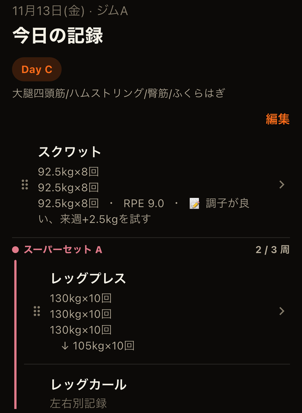
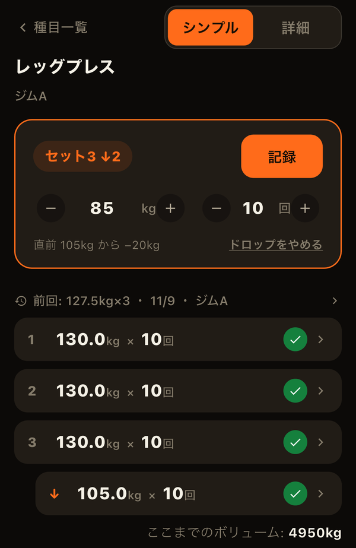

ジムでの時間が限られている時や、最後のセットでもうひと押ししたい時に使われるのが、スーパーセットとドロップセットです。どちらも筋トレのメニューに取り入れやすい方法ですが、記録の仕方を決めておかないと、あとで見返した時にセット数やボリュームが分かりにくくなります。この記事では、それぞれのやり方と注意点、記録するときのポイントを紹介します。
スーパーセットとは
スーパーセットは、2つの種目を休憩をほとんど挟まずに交互に行う方法です。1種目目を1セット行ったらすぐ2種目目を1セット、そこで休憩を取り、また1種目目に戻ります。
よく使われるのは、表と裏の関係にある筋肉（拮抗筋）の組み合わせです。
- レッグプレス（大腿四頭筋）＋レッグカール（ハムストリング）
- ベンチプレス（胸）＋ロウ系の種目（背中）
- アームカール（二頭筋）＋トライセプスプッシュダウン（三頭筋）
片方の筋肉を使っている間にもう片方が休めるため、全体の休憩時間を減らしながら、それぞれの種目の重量を落としにくいのが利点です。
スーパーセットの注意点
- 同じ部位どうしの組み合わせは別物：例えばベンチプレスとダンベルフライのように同じ部位を続けると、2種目目の重量はかなり落ちます。追い込みが目的ならよいですが、時短が目的なら拮抗筋の組み合わせが向いています
- 器具を2つ使える時に：混んでいるジムで2台のマシンを同時に確保するのは周りの迷惑になりがちです。空いている時間帯や、その場で使える器具の組み合わせを選びましょう
- 重い多関節種目は慎重に：スクワットやデッドリフトの高重量は、息が整う前に始めるとフォームが崩れやすくなります
ドロップセットとは
ドロップセットは、限界近くまで行ったセットの直後に、重量を下げて休まずに続ける方法です。下げる幅は直前の重量の20〜25%程度、段数は1〜2段が一般的です。
例：レッグプレス 130kg×10回 → 105kg×10回 → 85kg×8回
短い時間で筋肉をしっかり疲労させられるため、その種目の最後のセットに取り入れるのが定番です。
ドロップセットの注意点
- 毎セット行わない：疲労が大きいため、全セットで行うと次の種目や次回のトレーニングに響きます。最後のセットだけにするのがおすすめです
- 重量を素早く変えられる器具で：ピン式のマシンやダンベルなら、休憩を挟まずにすぐ重量を下げられます
- フォームが崩れたらそこで終える：段数をこなすことより、狙った筋肉に効いているかを優先しましょう
記録するときのポイント
- スーパーセットは種目ごとに記録する：交互に行っても、重量・回数はそれぞれの種目の記録として残しておくと、種目ごとの伸びを比べられます
- ドロップはセット数に混ぜない：ドロップを1セットとして数えると、同じ3セットでも日によって中身が違ってしまいます。元のセットとまとめて1セットとして扱うと、セット数の比較がしやすくなります
- ボリュームにはドロップも含める：ドロップも実際に挙げた重量なので、総ボリューム（重量×回数の合計）には含めておくと、その日にどれだけ追い込んだかが分かります
LiFTYでスーパーセット・ドロップセットを記録する
LiFTYでは、メニューで種目どうしを「⛓ つなげる」とスーパーセットになります。ワークアウト中の一覧には線と「スーパーセット A」の見出し、何周目かが表示され、1セット記録すると自動で相方の種目へ移ります。

ドロップは、セットを記録した後の「↓ ドロップを追加」から始めます。設定した下げ幅で計算した重量が入り、記録するとそのまま次のドロップの入力へ進むので、段を重ねても毎回ボタンを押し直す必要はありません。終える時は「ドロップをやめる」を押します。メニューの目標にドロップを組んでおけば、そのセットを記録した時に自動でドロップの入力に入り、組んだ段数を終えると次のセットへ進みます（最後のセットなら、そのままドロップを続けられます）。

ドロップは元のセットとまとめて1セットとして数え、ボリューム・推定1RM・自己ベストには含めます。スーパーセットでは、そのセットのドロップを終えてから相方の種目へ移ります。Apple Watchでも同じ流れで記録できます。詳しい操作は使い方ガイドの記録の基本の流れ・メニューを作る・Apple Watchをご覧ください。
関連記事
LiFTYは、スーパーセットの相方への移動もドロップの段の続きも、記録するだけで進むようにしています。アカウント作成なしで、今すぐ試せます。
App Storeでダウンロード